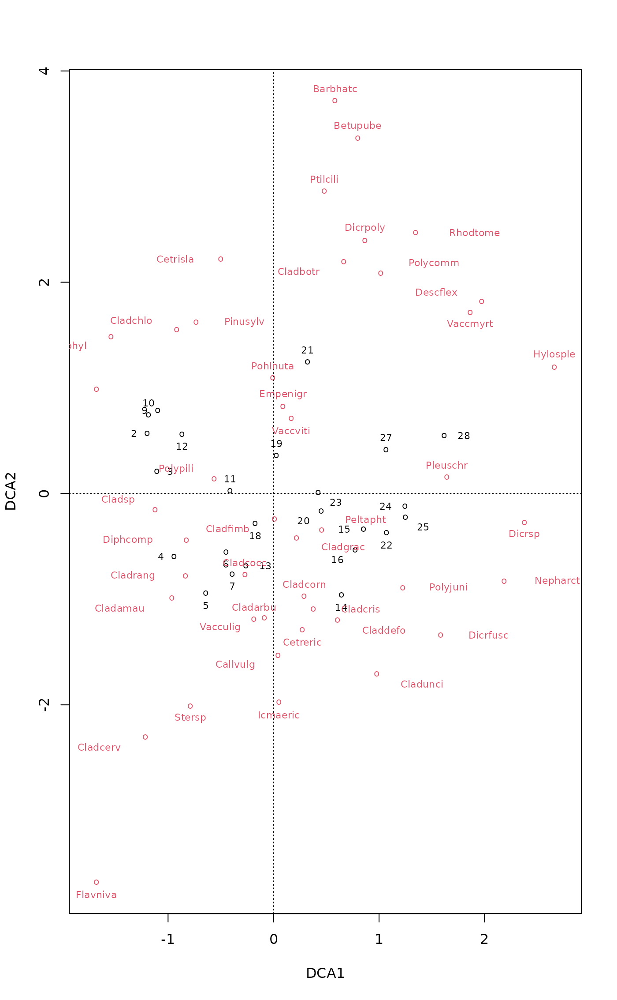
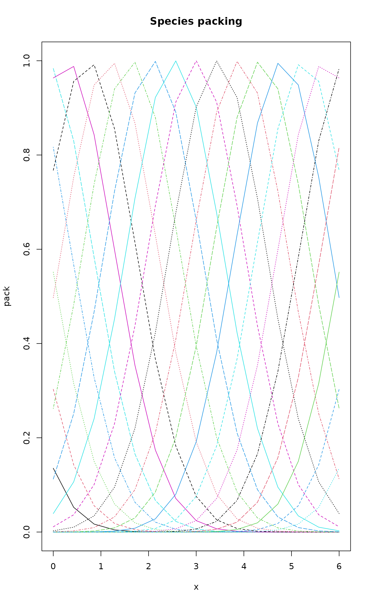
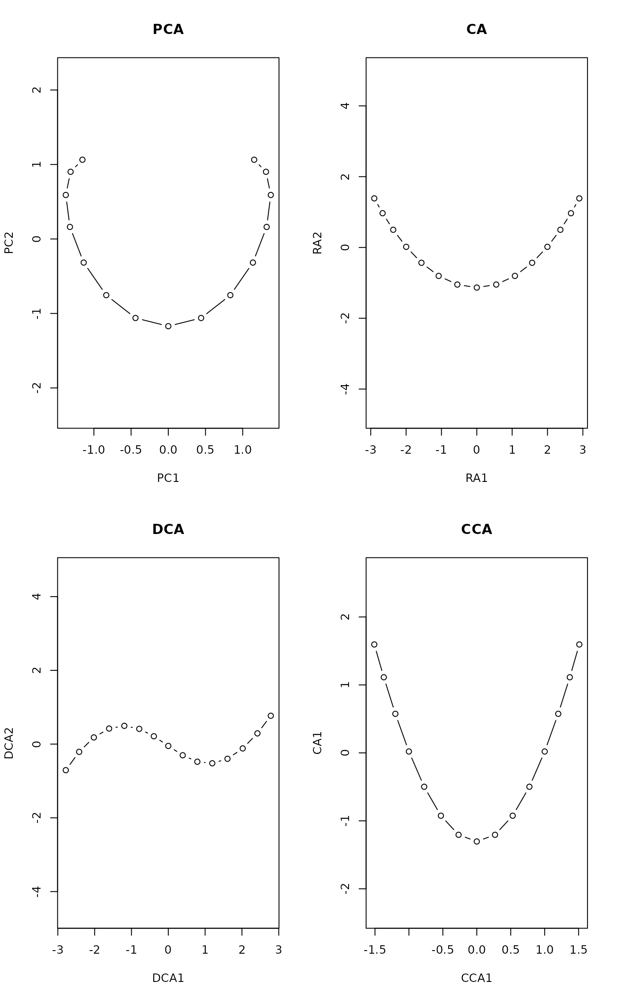
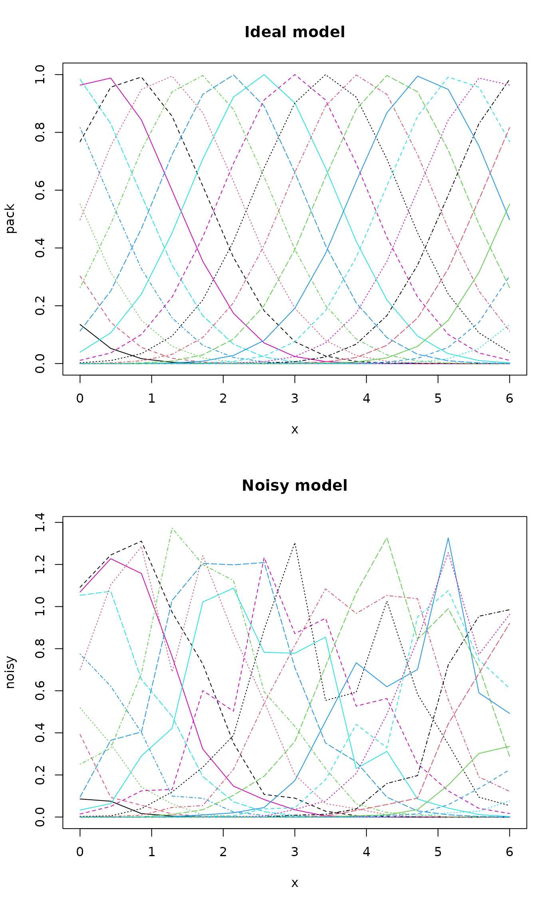
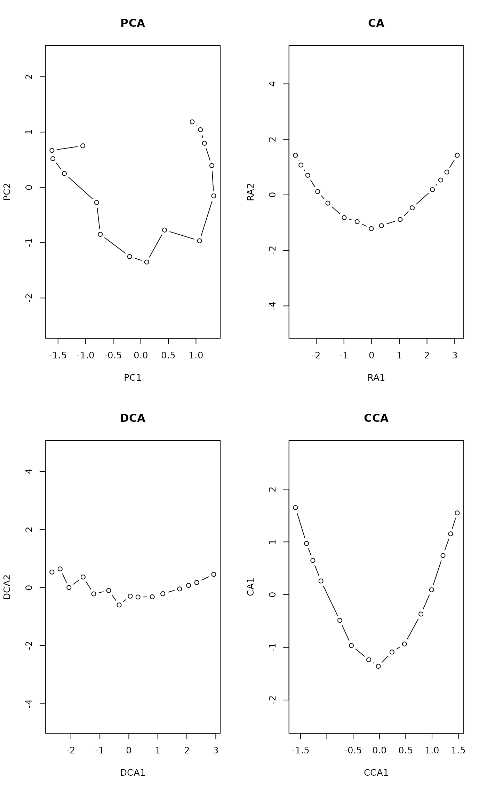

Detrended Correspondence Analysis and Basic Reciprocal Averaging
decorana.RdPerforms detrended correspondence analysis and basic reciprocal averaging or orthogonal correspondence analysis.
Usage
decorana(veg, iweigh=0, iresc=4, ira=0, mk=26, short=0,
before=NULL, after=NULL)
# S3 method for class 'decorana'
plot(x, choices=c(1,2), origin=TRUE,
display=c("both","sites","species","none"),
cex = 0.7, cols = c(1,2), type, xlim, ylim, ...)
# S3 method for class 'decorana'
text(x, display = c("sites", "species"), labels,
choices = 1:2, origin = TRUE, select, ...)
# S3 method for class 'decorana'
points(x, display = c("sites", "species"),
choices=1:2, origin = TRUE, select, ...)
# S3 method for class 'decorana'
scores(x, display="sites", choices=1:4,
origin=TRUE, tidy=FALSE, ...)
downweight(veg, fraction = 5)Arguments
- veg
Community data, a matrix-like object.
- iweigh
Downweighting of rare species (0: no).
- iresc
Number of rescaling cycles (0: no rescaling).
- ira
Type of analysis (0: detrended, 1: basic reciprocal averaging).
- mk
Number of segments in rescaling.
- short
Shortest gradient to be rescaled.
- before
Hill's piecewise transformation: values before transformation.
- after
Hill's piecewise transformation: values after transformation – these must correspond to values in
before.- x
A
decoranaresult object.- choices
Axes shown.
- origin
Use true origin even in detrended correspondence analysis.
- display
Display only sites, only species, both or neither.
- cex
Plot character size.
- cols
Colours used for sites and species.
- type
Type of plots, partial match to
"text","points"or"none".- labels
Optional text to be used instead of row names.
- select
Items to be displayed. This can either be a logical vector which is
TRUEfor displayed items or a vector of indices of displayed items.- xlim, ylim
the x and y limits (min,max) of the plot.
- fraction
Abundance fraction where downweighting begins.
- tidy
Return scores that are compatible with ggplot2: all scores are in a single
data.frame, score type is identified by factor variablescore("sites","species"), the names by variablelabel. These scores are incompatible with conventionalplotfunctions, but they can be used in ggplot2.- ...
Other arguments for
plotfunction.
Details
In late 1970s, correspondence analysis became the method of choice for ordination in vegetation science, since it seemed better able to cope with non-linear species responses than principal components analysis. However, even correspondence analysis can produce an arc-shaped configuration of a single gradient. Mark Hill developed detrended correspondence analysis to correct two assumed ‘faults’ in correspondence analysis: curvature of straight gradients and packing of sites at the ends of the gradient.
The curvature is removed by replacing the orthogonalization of axes
with detrending. In orthogonalization successive axes are made
non-correlated, but detrending should remove all systematic dependence
between axes. Detrending is performed using a smoothing window on
mk segments. The packing of sites at the ends of the gradient
is undone by rescaling the axes after extraction. After rescaling,
the axis is supposed to be scaled by ‘SD’ units, so that the
average width of Gaussian species responses is supposed to be one over
whole axis. Other innovations were the piecewise linear transformation
of species abundances and downweighting of rare species which were
regarded to have an unduly high influence on ordination axes.
It seems that detrending actually works by twisting the ordination
space, so that the results look non-curved in two-dimensional
projections (‘lolly paper effect’). As a result, the points
usually have an easily recognized triangular or diamond shaped
pattern, obviously an artefact of detrending. Rescaling works
differently than commonly presented, too. decorana does not
use, or even evaluate, the widths of species responses. Instead, it
tries to equalize the weighted standard deviation of species scores on
axis segments (parameter mk has no effect, since
decorana finds the segments internally). Function
tolerance returns this internal criterion and can be
used to assess the success of rescaling.
The plot method plots species and site scores. Classical
decorana scaled the axes so that smallest site score was 0 (and
smallest species score was negative), but summary, plot
and scores use the true origin, unless origin = FALSE.
In addition to proper eigenvalues, the function reports
‘decorana values’ in detrended analysis. These ‘decorana
values’ are the values that the legacy code of decorana returns
as eigenvalues. They are estimated during iteration, and describe the
joint effects of axes and detrending. The ‘decorana values’ are
estimated before rescaling and do not show its effect on
eigenvalues. The proper eigenvalues are estimated after extraction of
the axes and they are the ratio of weighted sum of squares of site and
species scores even in detrended and rescaled solutions. These
eigenvalues are estimated for each axis separately, but they are not
additive, because higher decorana axes can show effects already
explained by prior axes. ‘Additive eigenvalues’ are cleansed
from the effects of prior axes, and they can be assumed to add up to
total inertia (scaled Chi-square). For proportions and cumulative
proportions explained you can use eigenvals.decorana.
Value
decorana returns an object of class "decorana", which
has print, summary, scores, plot,
points and text methods, and support functions
eigenvals, bstick, screeplot,
predict and tolerance. downweight is an
independent function that can also be used with other methods than
decorana.
References
Hill, M.O. and Gauch, H.G. (1980). Detrended correspondence analysis: an improved ordination technique. Vegetatio 42, 47–58.
Oksanen, J. and Minchin, P.R. (1997). Instability of ordination results under changes in input data order: explanations and remedies. Journal of Vegetation Science 8, 447–454.
Note
decorana uses the central numerical engine of the
original Fortran code (which is in the public domain), or about 1/3 of
the original program. I have tried to implement the original
behaviour, although a great part of preparatory steps were written in
R language, and may differ somewhat from the original code. However,
well-known bugs are corrected and strict criteria used (Oksanen &
Minchin 1997).
Please note that there really is no need for piecewise transformation
or even downweighting within decorana, since there are more
powerful and extensive alternatives in R, but these options are
included for compliance with the original software. If a different
fraction of abundance is needed in downweighting, function
downweight must be applied before decorana. Function
downweight indeed can be applied prior to correspondence
analysis, and so it can be used together with cca, too.
Github package natto has an R implementation of
decorana which allows easier inspection of the
algorithm and also easier development of the function.
vegan 2.6-6 and earlier had a summary method, but it did
nothing useful and is now defunct. All its former information can be
extracted with scores or weights.decorana.
See also
For unconstrained ordination, non-metric multidimensional scaling in
monoMDS may be more robust (see also
metaMDS). Constrained (or ‘canonical’)
correspondence analysis can be made with cca.
Orthogonal correspondence analysis can be made with decorana or
cca, but the scaling of results vary (and the one in
decorana corresponds to scaling = "sites" and hill
= TRUE in cca.). See predict.decorana
for adding new points to an ordination.
Examples
data(varespec)
vare.dca <- decorana(varespec)
vare.dca
#>
#> Call:
#> decorana(veg = varespec)
#>
#> Detrended correspondence analysis with 26 segments.
#> Rescaling of axes with 4 iterations.
#> Total inertia (scaled Chi-square): 2.0832
#>
#> DCA1 DCA2 DCA3 DCA4
#> Eigenvalues 0.5235 0.3253 0.20010 0.19176
#> Additive Eigenvalues 0.5235 0.3217 0.17919 0.11922
#> Decorana values 0.5249 0.1572 0.09669 0.06075
#> Axis lengths 2.8161 2.2054 1.54650 1.64864
#>
plot(vare.dca)

### the detrending rationale:
gaussresp <- function(x,u) exp(-(x-u)^2/2)
x <- seq(0,6,length=15) ## The gradient
u <- seq(-2,8,len=23) ## The optima
pack <- outer(x,u,gaussresp)
matplot(x, pack, type="l", main="Species packing")

opar <- par(mfrow=c(2,2))
plot(scores(prcomp(pack)), asp=1, type="b", main="PCA")
plot(scores(decorana(pack, ira=1)), asp=1, type="b", main="CA")
plot(scores(decorana(pack)), asp=1, type="b", main="DCA")
plot(scores(cca(pack ~ x), dis="sites"), asp=1, type="b", main="CCA")

### Let's add some noise:
noisy <- (0.5 + runif(length(pack)))*pack
par(mfrow=c(2,1))
matplot(x, pack, type="l", main="Ideal model")
matplot(x, noisy, type="l", main="Noisy model")

par(mfrow=c(2,2))
plot(scores(prcomp(noisy)), type="b", main="PCA", asp=1)
plot(scores(decorana(noisy, ira=1)), type="b", main="CA", asp=1)
plot(scores(decorana(noisy)), type="b", main="DCA", asp=1)
plot(scores(cca(noisy ~ x), dis="sites"), asp=1, type="b", main="CCA")

par(opar)